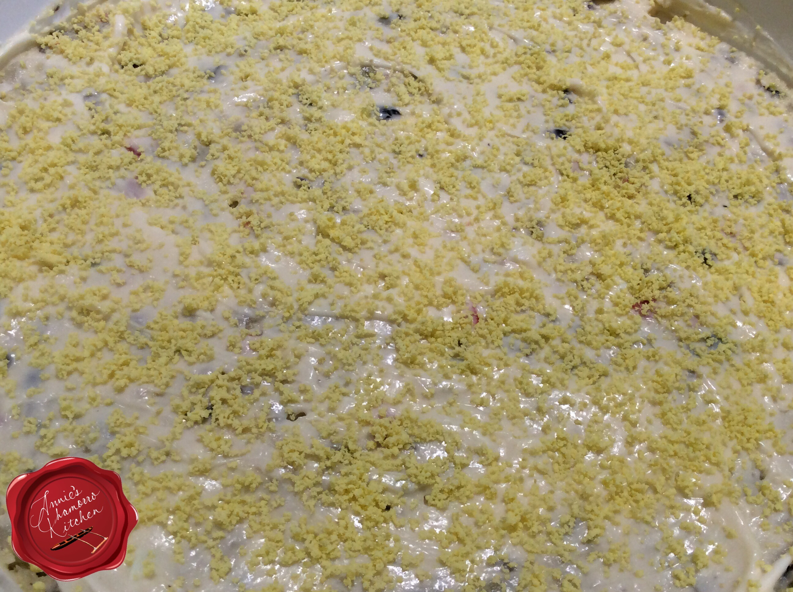

Potato Salad

A delicious potato salad mixture that accentuates the mayo flavor. A graet side dish for any event.
Ingredients
- 5 pounds potatos
- 8 hard boiled eggs (set aside one yolk), diced
- 1 tbls onion powder
- 2 tsp salt
- 1 tsp black pepper
- 1 can (4.25 oz) chopped black olives, squeezed to remove as much liquid as possible
- 2 jars (4 oz) diced pimentos, squeezed to remove as much liquid as possible
- 1 jar (10 oz) sweet pickle relish, squeezed to remove as much liquid as possible
- 3 cups mayonnaise
Steps
- Rinse the potatoes then place in a large pot filled with hot water. Bring water to a boil. Cook until the potatoes are done (it's done when a fork or knife easily pushes through when peirced). Remove the cooked potatoes from the water; allow to cool completely then peel and discard the potato skin. Cut into small cubes.
- Place the cubed potatoes and diced eggs into a large mixing bowl.
- Add the onion powder, salt and black pepper. Stir gently to combine.
- Add the drained and squeezed olives, pimentoes and relish to the bowl. Stir to combine.
- Fold in the mayonnaise. Taste and adjust the seasonings.
Serve and ENJOY!!!